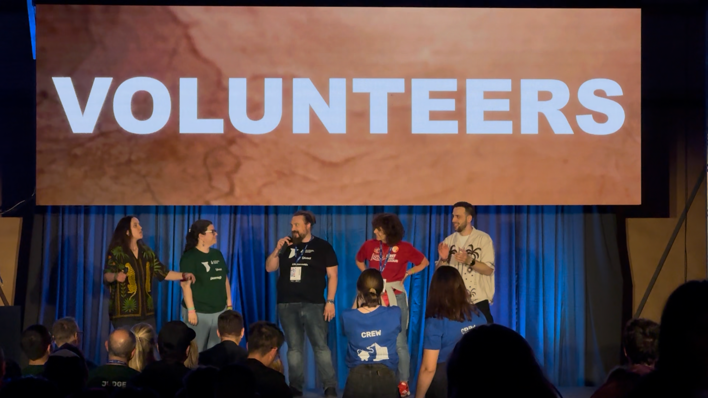
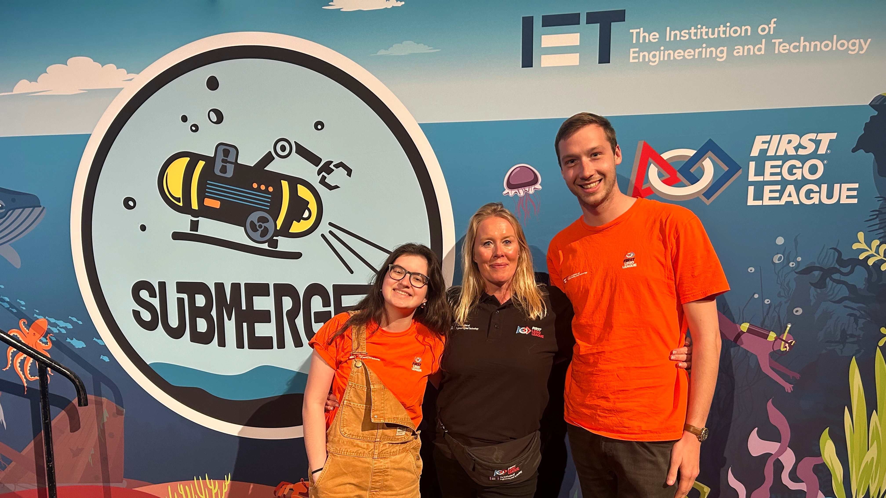
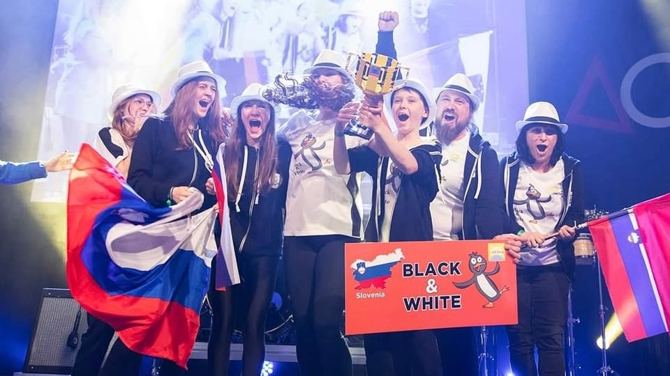
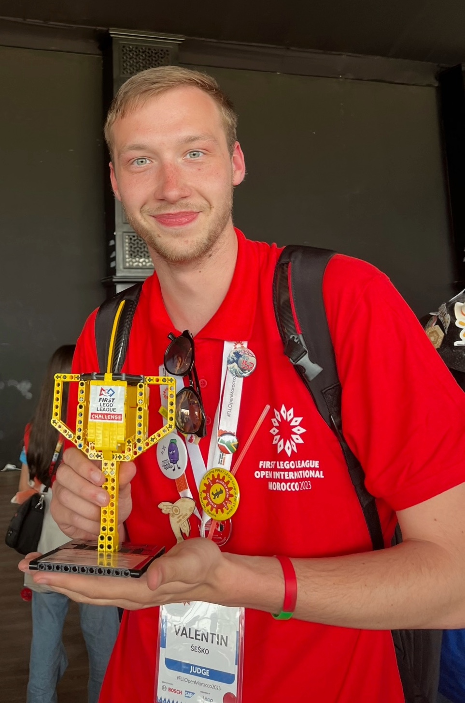
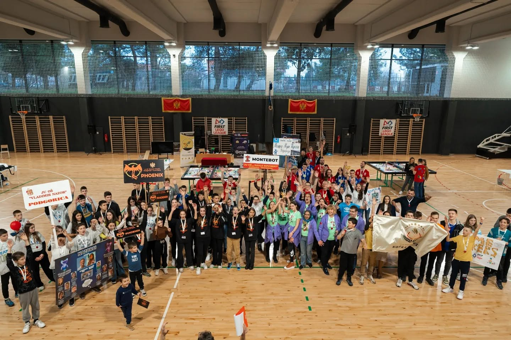
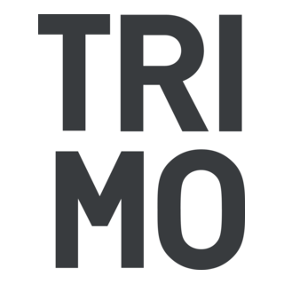
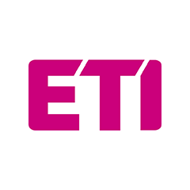
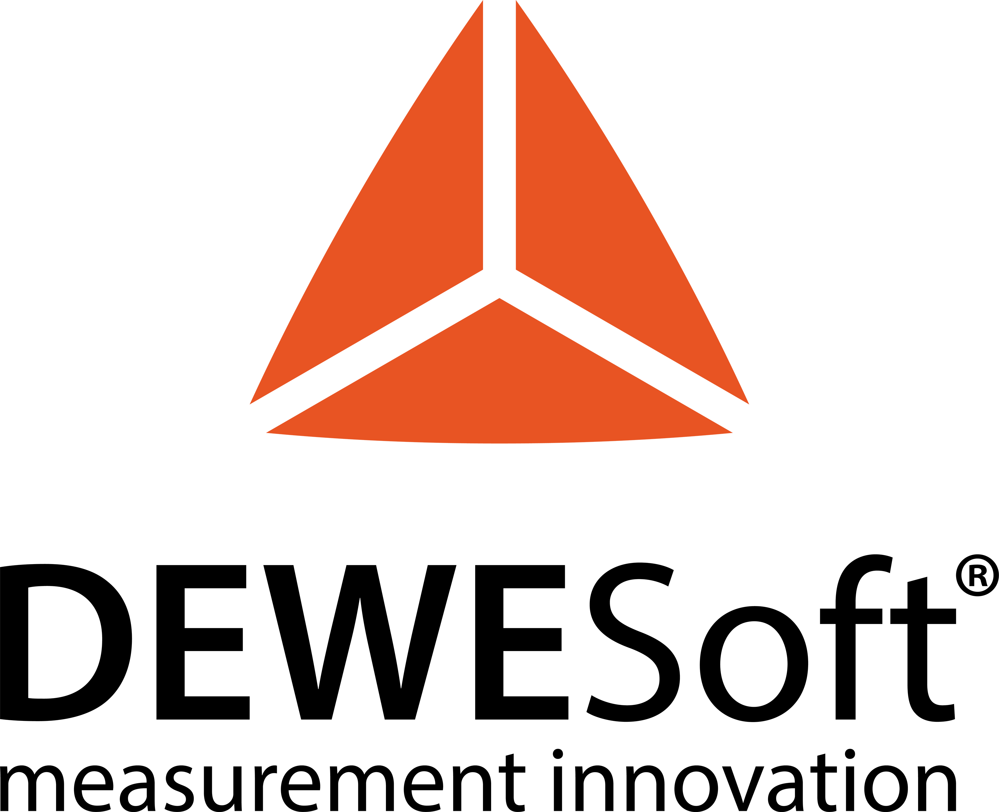
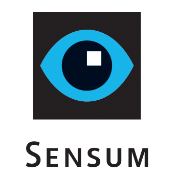

Zadnja novica
Prostovoljci društva so sodelovali na First Lego League Open International Championship Greece 2026 v Korintu.
Preberi večPrikazana je fotografija 1 od 3.
Društvo za raziskovanje in izobraževanje o tehnologiji in znanosti
Društvo DRITZ mladim odpira vrata v svet znanosti, robotike in inovacij skozi delavnice, mentorstvo ter tekmovanja doma in v tujini.
»Raziskujemo neznano, izobražujemo za prihodnost.«
Prostovoljci društva so sodelovali na First Lego League Open International Championship Greece 2026 v Korintu.
Preberi večSpodbujamo raziskovanje, inovacije in ustvarjalnost mladih skozi praktične projekte ter izobraževanje.
Več o poslanstvuHvala vsem podpornikom, ki omogočate izvedbo delavnic, tekmovanj in mednarodnih udeležb.
PodpornikiO društvu
Društvo DRITZ v Sloveniji deluje od leta 2024 z jasnim ciljem: spodbujati znanstveno raziskovanje, inovacije in izobraževanje na področju tehnologije in znanosti.
Naša misija je razvijati radovednost, kreativnost in tehnično znanje med mladimi ter jih usmerjati v razvoj tehnoloških veščin. Skozi delavnice, mentorstvo in tekmovanja gradimo okolje, kjer lahko mladi varno preizkušajo ideje, sodelujejo in rastejo.
Povezovati mlade z znanostjo in tehnologijo skozi praktično učenje in raziskovanje.
Družba, v kateri so inovativnost, sodelovanje in tehnično znanje dostopni vsakomur.
Delavnice programiranja, lego robotike, raziskovalnih metod in priprave na tekmovanja doma in v tujini.
Aktivnosti / Novice

Med 8. in 11. majem 2026 je pri grškem mestu Korint potekalo mednarodno prvenstvo FLL Open International Championship Greece 2026, kjer je Slovenija zablestela na vseh področjih. Trije prostovoljci, člani društva DRITZ, so kot del ekipe ocenjevalcev in sodnikov opravili vrhunsko delo, slovenska ekipa Eco Robots (OŠ Šentvid) pa je v močni svetovni konkurenci osvojila pokal. Iskrene čestitke našim prostovoljcem za izjemen trud in ekipi za fantastičen zgodovinski uspeh!

V soboto, 3. maja 2025, je v britanskem mestu Harrogate potekal veliki nacionalni finale FIRST LEGO League UK Finals 2025. Na tem odmevnem tehnološkem dogodku, ki ga organizira IET Education, sta pomembno vlogo odigrala tudi ocenjevalec in ocenjevalka iz našega društva DRITZ. Z delom v mednarodni sodniški žiriji sta prispevala k strokovnemu ocenjevanju inovativnih projektov in robotike ter znova dokazala visoko raven znanja naših članov. Ponosni smo na naše sodnike, ki s svojim prostovoljnim delom redno soustvarjajo vrhunske dogodke FLL tudi na tujih tleh!

Med 13. in 16. majem 2024 je v norveškem mestu Bodø potekalo prestižno evropsko prvenstvo FLL Open European Championship 2024, ki se bo z zlatimi črkami zapisalo v zgodovino Slovenskega FLL programa in našega društva. Slovenska vrhunska ekipa Black&White je namreč v izjemno močni konkurenci ponosno postala evropski prvak! Uspeh sta na prizorišču soustvarjala tudi dva ocenjevalca in člana društva DRITZ, ki sta z delom v ocenjevalni ekipi skrbela in strokovno sojenje na najvišji ravni. Iskrene čestitke celotni ekipi Black&White za ta neponovljiv, fantastičen evropski uspeh ter našima ocenjevalcema!
V soboto, 20. aprila 2024, je v angleškem mestu Harrogate potekal veliki UK National Final 2024 - finale FIRST LEGO League tekmovanja za Anglijo, Irsko, Wales in Škotsko. Na tem prestižnem dogodku sezone MASTERPIECE so slovensko strokovnost zastopali trije ocenjevalci in člani našega društva DRITZ. Kot del uradne žirije so z ocenjevanjem inovativnih projektov in robotike pomembno prispevali k uspešni izvedbi tekmovanja. Čestitke naši sodniški trojici za odlično opravljeno delo na velikem mednarodnem odru!

Ko je Maroko med 18. in 21. majem 2023 gostil sploh prvo mednarodno FLL prvenstvo na afriških tleh – Morocco Open International 2023 –, društvo DRITZ ni manjkalo. V vročem Marakešu so se sezone SUPERPOWERED udeležili trije naši prostovoljci, ki so zasedli mesta v uradni sodniški žiriji. Izjemen turnir pa se je končal s prav posebnim slavjem, saj je naš ocenjevalec Valentin Šeško na zaključni ceremoniji prejel prestižni pokal za najprostovoljca tekmovanja! To vrhunsko priznanje je odraz njegove izjemne energije, strokovnosti in predanosti FLL skupnosti. Velik hvala in iskrene čestitke celotni trojici, še posebej pa našemu nagrajenemu najprostovoljcu za ta izjemen mednarodni uspeh!

Povezovanje in širjenje znanja ne poznata meja, kar v društvu DRITZ dokazujemo s svojim stalnim delovanjem v širši regiji. Vsako leto aktivno sodelujemo in pomagamo pri organizaciji državnih tekmovanj FIRST LEGO League na Hrvaškem, v Srbiji in v Črni gori. Naši člani s svojimi bogatimi izkušnjami in strokovnim znanjem na teh turnirjih prevzemajo ključne organizacijske ter sodniške vloge. S tem pomembno prispevamo k dvigu ravni mladinske robotike na celotnem Balkanu ter utrjujemo partnerske vezi z regijskimi FLL organizatorji. Ponosni smo, da lahko soustvarjamo nepozabne tehnološke izkušnje za mlade umane tudi zunaj naših meja!
Podporniki




Spoštovani podporniki, iskrena hvala za vaše zaupanje in podporo. Z vašo pomočjo lahko mladim omogočamo kakovostne izobraževalne programe, mednarodne povezave in razvoj praktičnih znanj, ki oblikujejo prihodnost tehnologije in znanosti.
Vaš prispevek ni le finančna pomoč – je naložba v generacije raziskovalcev, inovatorjev in odgovornih ustvarjalcev družbe.
Kontakt